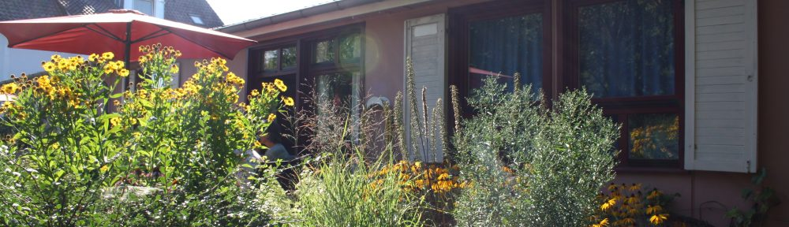

Fragen, Interesse an einem Platz oder Lust auf einen Besuch? Wir freuen uns, von Ihnen zu hören.
Ist niemand erreichbar, sprechen Sie bitte auf den Anrufbeantworter – wir rufen zurück.
Kindergartenleitung Peggy Ellersiek steht Ihnen für Fragen und Besuchstermine gern zur Verfügung.

Der Kindergarten liegt in der Erlenstraße 9 nahe der Ortsgrenze zu Baienfurt.
Route planen (OpenStreetMap)